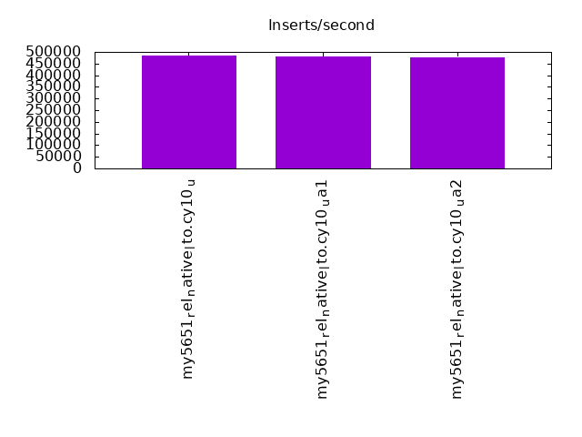
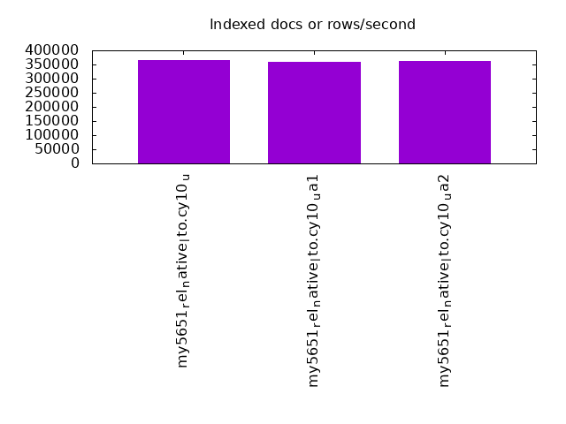
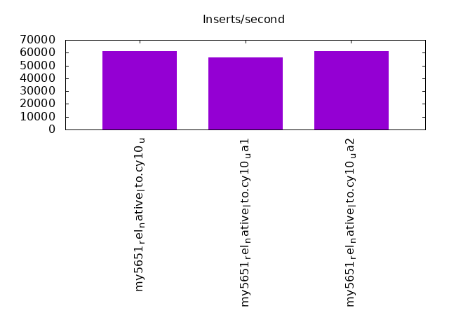
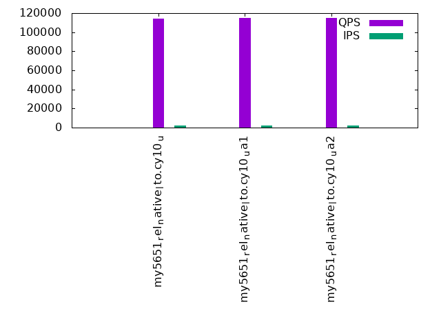
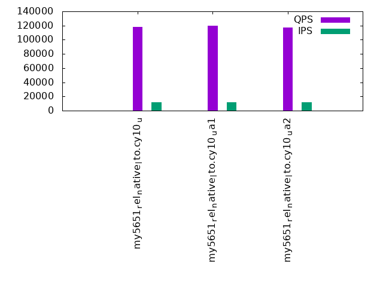
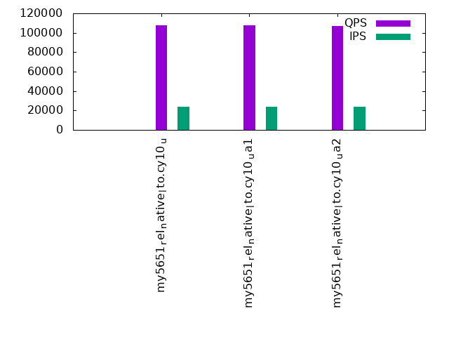

This is a report for the insert benchmark with 480M docs and 24 client(s). It is generated by scripts (bash, awk, sed) and Tufte might not be impressed. An overview of the insert benchmark is here and a short update is here. Below, by DBMS, I mean DBMS+version.config. An example is my8020.c10b40 where my means MySQL, 8020 is version 8.0.20 and c10b40 is the name for the configuration file.
The test server has 80 cores with hyperthreads enabled, 256G RAM and fast storage. The benchmark was run with 24 client and there were 1 or 3 connections per client (1 for queries or inserts without rate limits, 1+1 for rate limited inserts+deletes). There are 24 tables, with a client per table. It loads 480M rows without secondary indexes, creates secondary indexes, then inserts 960M rows with a delete per insert to avoid growing the table. It then does 3 read+write tests for 3600s each that do queries as fast as possible with 100, 500 and then 1000 inserts/second/client concurrent with the queries and 1000 deletes/second to avoid growing the table. The database is cached by InnoDB.
The tested DBMS are:
The numbers are inserts/s for l.i0 and l.i1, indexed docs (or rows) /s for l.x and queries/s for q*.2. The values are the average rate over the entire test for inserts (IPS) and queries (QPS). The range of values for IPS and QPS is split into 3 parts: bottom 25%, middle 50%, top 25%. Values in the bottom 25% have a red background, values in the top 25% have a green background and values in the middle have no color. A gray background is used for values that can be ignored because the DBMS did not sustain the target insert rate. Red backgrounds are not used when the minimum value is within 80% of the max value.
| dbms | l.i0 | l.x | l.i1 | q100.1 | q500.1 | q1000.1 |
|---|---|---|---|---|---|---|
| my5651_rel_native_lto.cy10_u | 483871 | 365095 | 61511 | 114414 | 118373 | 107661 |
| my5651_rel_native_lto.cy10_ua1 | 481444 | 358819 | 56411 | 114623 | 120045 | 107721 |
| my5651_rel_native_lto.cy10_ua2 | 476663 | 362887 | 61491 | 114959 | 116869 | 107269 |
This table has relative throughput, throughput for the DBMS relative to the DBMS in the first line, using the absolute throughput from the previous table. Values less than 0.95 have a yellow background. Values greater than 1.05 have a blue background.
| dbms | l.i0 | l.x | l.i1 | q100.1 | q500.1 | q1000.1 |
|---|---|---|---|---|---|---|
| my5651_rel_native_lto.cy10_u | 1.00 | 1.00 | 1.00 | 1.00 | 1.00 | 1.00 |
| my5651_rel_native_lto.cy10_ua1 | 0.99 | 0.98 | 0.92 | 1.00 | 1.01 | 1.00 |
| my5651_rel_native_lto.cy10_ua2 | 0.99 | 0.99 | 1.00 | 1.00 | 0.99 | 1.00 |
This lists the average rate of inserts/s for the tests that do inserts concurrent with queries. For such tests the query rate is listed in the table above. The read+write tests are setup so that the insert rate should match the target rate every second. Cells that are not at least 95% of the target have a red background to indicate a failure to satisfy the target.
| dbms | q100.1 | q500.1 | q1000.1 |
|---|---|---|---|
| my5651_rel_native_lto.cy10_u | 2380 | 11904 | 23834 |
| my5651_rel_native_lto.cy10_ua1 | 2380 | 11907 | 23828 |
| my5651_rel_native_lto.cy10_ua2 | 2379 | 11907 | 23828 |
| target | 2400 | 12000 | 24000 |
l.i0: load without secondary indexes. Graphs for performance per 1-second interval are here.
Average throughput:
Insert response time histogram: each cell has the percentage of responses that take <= the time in the header and max is the max response time in seconds. For the max column values in the top 25% of the range have a red background and in the bottom 25% of the range have a green background. The red background is not used when the min value is within 80% of the max value.
| dbms | 256us | 1ms | 4ms | 16ms | 64ms | 256ms | 1s | 4s | 16s | gt | max |
|---|---|---|---|---|---|---|---|---|---|---|---|
| my5651_rel_native_lto.cy10_u | 0.347 | 11.482 | 87.914 | 0.215 | 0.043 | 0.100 | |||||
| my5651_rel_native_lto.cy10_ua1 | 0.346 | 11.402 | 87.996 | 0.214 | 0.043 | 0.097 | |||||
| my5651_rel_native_lto.cy10_ua2 | 0.340 | 9.997 | 89.393 | 0.228 | 0.043 | 0.090 |
Performance metrics for the DBMS listed above. Some are normalized by throughput, others are not. Legend for results is here.
ips qps rps rmbps wps wmbps rpq rkbpq wpi wkbpi csps cpups cspq cpupq dbgb1 dbgb2 rss maxop p50 p99 tag 483871 0 0 0.0 2283.9 112.3 0.000 0.000 0.005 0.238 77635 38.7 0.160 64 31.8 160.3 46.5 0.100 20177 17882 480m.my5651_rel_native_lto.cy10_u 481444 0 0 0.0 1253.5 106.7 0.000 0.000 0.003 0.227 73199 38.3 0.152 64 31.8 160.3 46.5 0.097 20180 17881 480m.my5651_rel_native_lto.cy10_ua1 476663 0 0 0.0 2290.4 110.8 0.000 0.000 0.005 0.238 76305 38.3 0.160 64 31.8 160.3 46.5 0.090 19880 17483 480m.my5651_rel_native_lto.cy10_ua2
l.x: create secondary indexes.
Average throughput:
Performance metrics for the DBMS listed above. Some are normalized by throughput, others are not. Legend for results is here.
ips qps rps rmbps wps wmbps rpq rkbpq wpi wkbpi csps cpups cspq cpupq dbgb1 dbgb2 rss maxop p50 p99 tag 365095 0 0 0.0 20148.6 687.1 0.000 0.000 0.055 1.927 75986 31.1 0.208 68 65.2 193.7 80.7 0.002 NA NA 480m.my5651_rel_native_lto.cy10_u 358819 0 0 0.0 16232.2 638.5 0.000 0.000 0.045 1.822 67467 31.5 0.188 70 65.2 193.7 80.7 0.002 NA NA 480m.my5651_rel_native_lto.cy10_ua1 362887 0 0 0.0 19984.1 681.8 0.000 0.000 0.055 1.924 76169 31.2 0.210 69 65.2 193.7 80.7 0.002 NA NA 480m.my5651_rel_native_lto.cy10_ua2
l.i1: continue load after secondary indexes created. Graphs for performance per 1-second interval are here.
Average throughput:
Insert response time histogram: each cell has the percentage of responses that take <= the time in the header and max is the max response time in seconds. For the max column values in the top 25% of the range have a red background and in the bottom 25% of the range have a green background. The red background is not used when the min value is within 80% of the max value.
| dbms | 256us | 1ms | 4ms | 16ms | 64ms | 256ms | 1s | 4s | 16s | gt | max |
|---|---|---|---|---|---|---|---|---|---|---|---|
| my5651_rel_native_lto.cy10_u | 0.008 | 16.328 | 83.638 | 0.025 | 0.163 | ||||||
| my5651_rel_native_lto.cy10_ua1 | 0.007 | 7.614 | 92.354 | 0.025 | 0.153 | ||||||
| my5651_rel_native_lto.cy10_ua2 | 0.014 | 17.451 | 82.508 | 0.027 | nonzero | 3.842 |
Delete response time histogram: each cell has the percentage of responses that take <= the time in the header and max is the max response time in seconds. For the max column values in the top 25% of the range have a red background and in the bottom 25% of the range have a green background. The red background is not used when the min value is within 80% of the max value.
| dbms | 256us | 1ms | 4ms | 16ms | 64ms | 256ms | 1s | 4s | 16s | gt | max |
|---|---|---|---|---|---|---|---|---|---|---|---|
| my5651_rel_native_lto.cy10_u | 0.013 | 21.062 | 78.918 | 0.007 | 0.151 | ||||||
| my5651_rel_native_lto.cy10_ua1 | 0.013 | 11.745 | 88.237 | 0.005 | 0.136 | ||||||
| my5651_rel_native_lto.cy10_ua2 | 0.017 | 22.217 | 77.757 | 0.008 | nonzero | 3.843 |
Performance metrics for the DBMS listed above. Some are normalized by throughput, others are not. Legend for results is here.
ips qps rps rmbps wps wmbps rpq rkbpq wpi wkbpi csps cpups cspq cpupq dbgb1 dbgb2 rss maxop p50 p99 tag 61511 0 1469 6.3 6840.1 212.3 0.024 0.105 0.111 3.535 134852 66.6 2.192 866 217.4 393.8 215.8 0.163 2547 2048 480m.my5651_rel_native_lto.cy10_u 56411 0 1414 6.1 5871.9 197.9 0.025 0.111 0.104 3.593 135569 66.3 2.403 940 217.6 394.1 215.8 0.153 2348 1898 480m.my5651_rel_native_lto.cy10_ua1 61491 0 1387 6.0 6845.9 212.6 0.023 0.100 0.111 3.540 135141 66.7 2.198 868 217.5 393.9 215.8 3.842 2547 2048 480m.my5651_rel_native_lto.cy10_ua2
q100.1: range queries with 100 insert/s per client. Graphs for performance per 1-second interval are here.
Average throughput:
Query response time histogram: each cell has the percentage of responses that take <= the time in the header and max is the max response time in seconds. For max values in the top 25% of the range have a red background and in the bottom 25% of the range have a green background. The red background is not used when the min value is within 80% of the max value.
| dbms | 256us | 1ms | 4ms | 16ms | 64ms | 256ms | 1s | 4s | 16s | gt | max |
|---|---|---|---|---|---|---|---|---|---|---|---|
| my5651_rel_native_lto.cy10_u | 93.070 | 6.651 | 0.164 | 0.115 | nonzero | 0.023 | |||||
| my5651_rel_native_lto.cy10_ua1 | 93.079 | 6.643 | 0.168 | 0.110 | nonzero | 0.047 | |||||
| my5651_rel_native_lto.cy10_ua2 | 93.336 | 6.399 | 0.154 | 0.110 | nonzero | 0.022 |
Insert response time histogram: each cell has the percentage of responses that take <= the time in the header and max is the max response time in seconds. For max values in the top 25% of the range have a red background and in the bottom 25% of the range have a green background. The red background is not used when the min value is within 80% of the max value.
| dbms | 256us | 1ms | 4ms | 16ms | 64ms | 256ms | 1s | 4s | 16s | gt | max |
|---|---|---|---|---|---|---|---|---|---|---|---|
| my5651_rel_native_lto.cy10_u | 32.093 | 67.597 | 0.310 | 0.044 | |||||||
| my5651_rel_native_lto.cy10_ua1 | 41.186 | 58.674 | 0.140 | 0.025 | |||||||
| my5651_rel_native_lto.cy10_ua2 | 36.615 | 63.261 | 0.124 | 0.048 |
Delete response time histogram: each cell has the percentage of responses that take <= the time in the header and max is the max response time in seconds. For max values in the top 25% of the range have a red background and in the bottom 25% of the range have a green background. The red background is not used when the min value is within 80% of the max value.
| dbms | 256us | 1ms | 4ms | 16ms | 64ms | 256ms | 1s | 4s | 16s | gt | max |
|---|---|---|---|---|---|---|---|---|---|---|---|
| my5651_rel_native_lto.cy10_u | 64.556 | 35.388 | 0.056 | 0.044 | |||||||
| my5651_rel_native_lto.cy10_ua1 | 74.065 | 25.927 | 0.008 | 0.022 | |||||||
| my5651_rel_native_lto.cy10_ua2 | 70.832 | 29.159 | 0.009 | 0.026 |
Performance metrics for the DBMS listed above. Some are normalized by throughput, others are not. Legend for results is here.
ips qps rps rmbps wps wmbps rpq rkbpq wpi wkbpi csps cpups cspq cpupq dbgb1 dbgb2 rss maxop p50 p99 tag 2380 114414 1140 16.8 6756.2 195.3 0.010 0.150 2.839 84.042 488018 39.8 4.265 278 217.4 393.8 215.9 0.023 4795 4412 480m.my5651_rel_native_lto.cy10_u 2380 114623 749 16.6 6401.7 195.6 0.007 0.149 2.690 84.191 485023 39.7 4.231 277 217.6 394.1 215.8 0.047 4812 4428 480m.my5651_rel_native_lto.cy10_ua1 2379 114959 1134 16.7 6813.2 196.8 0.010 0.149 2.864 84.735 487704 39.5 4.242 275 217.5 393.9 215.9 0.022 4811 4428 480m.my5651_rel_native_lto.cy10_ua2
q500.1: range queries with 500 insert/s per client. Graphs for performance per 1-second interval are here.
Average throughput:
Query response time histogram: each cell has the percentage of responses that take <= the time in the header and max is the max response time in seconds. For max values in the top 25% of the range have a red background and in the bottom 25% of the range have a green background. The red background is not used when the min value is within 80% of the max value.
| dbms | 256us | 1ms | 4ms | 16ms | 64ms | 256ms | 1s | 4s | 16s | gt | max |
|---|---|---|---|---|---|---|---|---|---|---|---|
| my5651_rel_native_lto.cy10_u | 95.144 | 4.752 | 0.034 | 0.070 | nonzero | 0.061 | |||||
| my5651_rel_native_lto.cy10_ua1 | 95.738 | 4.163 | 0.037 | 0.061 | nonzero | 0.027 | |||||
| my5651_rel_native_lto.cy10_ua2 | 94.236 | 5.644 | 0.043 | 0.077 | nonzero | 0.037 |
Insert response time histogram: each cell has the percentage of responses that take <= the time in the header and max is the max response time in seconds. For max values in the top 25% of the range have a red background and in the bottom 25% of the range have a green background. The red background is not used when the min value is within 80% of the max value.
| dbms | 256us | 1ms | 4ms | 16ms | 64ms | 256ms | 1s | 4s | 16s | gt | max |
|---|---|---|---|---|---|---|---|---|---|---|---|
| my5651_rel_native_lto.cy10_u | 10.727 | 89.101 | 0.172 | 0.001 | 0.077 | ||||||
| my5651_rel_native_lto.cy10_ua1 | 28.882 | 71.094 | 0.024 | 0.033 | |||||||
| my5651_rel_native_lto.cy10_ua2 | 5.896 | 91.006 | 3.097 | 0.001 | 0.072 |
Delete response time histogram: each cell has the percentage of responses that take <= the time in the header and max is the max response time in seconds. For max values in the top 25% of the range have a red background and in the bottom 25% of the range have a green background. The red background is not used when the min value is within 80% of the max value.
| dbms | 256us | 1ms | 4ms | 16ms | 64ms | 256ms | 1s | 4s | 16s | gt | max |
|---|---|---|---|---|---|---|---|---|---|---|---|
| my5651_rel_native_lto.cy10_u | 16.760 | 83.173 | 0.066 | 0.001 | 0.074 | ||||||
| my5651_rel_native_lto.cy10_ua1 | 42.807 | 57.176 | 0.017 | 0.027 | |||||||
| my5651_rel_native_lto.cy10_ua2 | 10.033 | 88.935 | 1.032 | 0.001 | 0.072 |
Performance metrics for the DBMS listed above. Some are normalized by throughput, others are not. Legend for results is here.
ips qps rps rmbps wps wmbps rpq rkbpq wpi wkbpi csps cpups cspq cpupq dbgb1 dbgb2 rss maxop p50 p99 tag 11904 118373 823 8.4 5354.0 155.7 0.007 0.073 0.450 13.394 500843 42.5 4.231 287 217.4 393.8 215.9 0.061 4891 4460 480m.my5651_rel_native_lto.cy10_u 11907 120045 803 8.2 4778.0 154.6 0.007 0.070 0.401 13.293 504313 41.7 4.201 278 217.6 394.1 215.8 0.027 4971 4556 480m.my5651_rel_native_lto.cy10_ua1 11907 116869 829 8.6 5373.9 156.2 0.007 0.075 0.451 13.434 494579 43.5 4.232 298 217.5 393.9 215.9 0.037 4859 4444 480m.my5651_rel_native_lto.cy10_ua2
q1000.1: range queries with 1000 insert/s per client. Graphs for performance per 1-second interval are here.
Average throughput:
Query response time histogram: each cell has the percentage of responses that take <= the time in the header and max is the max response time in seconds. For max values in the top 25% of the range have a red background and in the bottom 25% of the range have a green background. The red background is not used when the min value is within 80% of the max value.
| dbms | 256us | 1ms | 4ms | 16ms | 64ms | 256ms | 1s | 4s | 16s | gt | max |
|---|---|---|---|---|---|---|---|---|---|---|---|
| my5651_rel_native_lto.cy10_u | 84.144 | 15.475 | 0.317 | 0.064 | nonzero | 0.028 | |||||
| my5651_rel_native_lto.cy10_ua1 | 84.000 | 15.626 | 0.311 | 0.063 | nonzero | 0.041 | |||||
| my5651_rel_native_lto.cy10_ua2 | 83.985 | 15.630 | 0.321 | 0.064 | nonzero | 0.026 |
Insert response time histogram: each cell has the percentage of responses that take <= the time in the header and max is the max response time in seconds. For max values in the top 25% of the range have a red background and in the bottom 25% of the range have a green background. The red background is not used when the min value is within 80% of the max value.
| dbms | 256us | 1ms | 4ms | 16ms | 64ms | 256ms | 1s | 4s | 16s | gt | max |
|---|---|---|---|---|---|---|---|---|---|---|---|
| my5651_rel_native_lto.cy10_u | 0.358 | 17.403 | 82.238 | 0.001 | 0.076 | ||||||
| my5651_rel_native_lto.cy10_ua1 | 0.754 | 16.034 | 83.210 | 0.001 | 0.075 | ||||||
| my5651_rel_native_lto.cy10_ua2 | 0.366 | 15.049 | 84.585 | nonzero | 0.065 |
Delete response time histogram: each cell has the percentage of responses that take <= the time in the header and max is the max response time in seconds. For max values in the top 25% of the range have a red background and in the bottom 25% of the range have a green background. The red background is not used when the min value is within 80% of the max value.
| dbms | 256us | 1ms | 4ms | 16ms | 64ms | 256ms | 1s | 4s | 16s | gt | max |
|---|---|---|---|---|---|---|---|---|---|---|---|
| my5651_rel_native_lto.cy10_u | 0.169 | 20.179 | 79.652 | nonzero | 0.074 | ||||||
| my5651_rel_native_lto.cy10_ua1 | 0.660 | 18.363 | 80.976 | 0.001 | 0.077 | ||||||
| my5651_rel_native_lto.cy10_ua2 | 0.154 | 17.240 | 82.605 | nonzero | 0.069 |
Performance metrics for the DBMS listed above. Some are normalized by throughput, others are not. Legend for results is here.
ips qps rps rmbps wps wmbps rpq rkbpq wpi wkbpi csps cpups cspq cpupq dbgb1 dbgb2 rss maxop p50 p99 tag 23834 107661 791 6.1 3495.6 103.3 0.007 0.058 0.147 4.440 456168 54.5 4.237 405 217.4 393.8 215.9 0.028 4491 4140 480m.my5651_rel_native_lto.cy10_u 23828 107721 812 6.3 3408.1 102.9 0.008 0.060 0.143 4.422 453525 54.7 4.210 406 217.6 394.1 215.8 0.041 4492 4188 480m.my5651_rel_native_lto.cy10_ua1 23828 107269 796 6.0 3545.2 104.9 0.007 0.057 0.149 4.508 453691 55.0 4.229 410 217.5 393.9 215.9 0.026 4475 4156 480m.my5651_rel_native_lto.cy10_ua2
l.i0: load without secondary indexes
Performance metrics for all DBMS, not just the ones listed above. Some are normalized by throughput, others are not. Legend for results is here.
ips qps rps rmbps wps wmbps rpq rkbpq wpi wkbpi csps cpups cspq cpupq dbgb1 dbgb2 rss maxop p50 p99 tag 483871 0 0 0.0 2283.9 112.3 0.000 0.000 0.005 0.238 77635 38.7 0.160 64 31.8 160.3 46.5 0.100 20177 17882 480m.my5651_rel_native_lto.cy10_u 481444 0 0 0.0 1253.5 106.7 0.000 0.000 0.003 0.227 73199 38.3 0.152 64 31.8 160.3 46.5 0.097 20180 17881 480m.my5651_rel_native_lto.cy10_ua1 476663 0 0 0.0 2290.4 110.8 0.000 0.000 0.005 0.238 76305 38.3 0.160 64 31.8 160.3 46.5 0.090 19880 17483 480m.my5651_rel_native_lto.cy10_ua2
l.x: create secondary indexes
Performance metrics for all DBMS, not just the ones listed above. Some are normalized by throughput, others are not. Legend for results is here.
ips qps rps rmbps wps wmbps rpq rkbpq wpi wkbpi csps cpups cspq cpupq dbgb1 dbgb2 rss maxop p50 p99 tag 365095 0 0 0.0 20148.6 687.1 0.000 0.000 0.055 1.927 75986 31.1 0.208 68 65.2 193.7 80.7 0.002 NA NA 480m.my5651_rel_native_lto.cy10_u 358819 0 0 0.0 16232.2 638.5 0.000 0.000 0.045 1.822 67467 31.5 0.188 70 65.2 193.7 80.7 0.002 NA NA 480m.my5651_rel_native_lto.cy10_ua1 362887 0 0 0.0 19984.1 681.8 0.000 0.000 0.055 1.924 76169 31.2 0.210 69 65.2 193.7 80.7 0.002 NA NA 480m.my5651_rel_native_lto.cy10_ua2
l.i1: continue load after secondary indexes created
Performance metrics for all DBMS, not just the ones listed above. Some are normalized by throughput, others are not. Legend for results is here.
ips qps rps rmbps wps wmbps rpq rkbpq wpi wkbpi csps cpups cspq cpupq dbgb1 dbgb2 rss maxop p50 p99 tag 61511 0 1469 6.3 6840.1 212.3 0.024 0.105 0.111 3.535 134852 66.6 2.192 866 217.4 393.8 215.8 0.163 2547 2048 480m.my5651_rel_native_lto.cy10_u 56411 0 1414 6.1 5871.9 197.9 0.025 0.111 0.104 3.593 135569 66.3 2.403 940 217.6 394.1 215.8 0.153 2348 1898 480m.my5651_rel_native_lto.cy10_ua1 61491 0 1387 6.0 6845.9 212.6 0.023 0.100 0.111 3.540 135141 66.7 2.198 868 217.5 393.9 215.8 3.842 2547 2048 480m.my5651_rel_native_lto.cy10_ua2
q100.1: range queries with 100 insert/s per client
Performance metrics for all DBMS, not just the ones listed above. Some are normalized by throughput, others are not. Legend for results is here.
ips qps rps rmbps wps wmbps rpq rkbpq wpi wkbpi csps cpups cspq cpupq dbgb1 dbgb2 rss maxop p50 p99 tag 2380 114414 1140 16.8 6756.2 195.3 0.010 0.150 2.839 84.042 488018 39.8 4.265 278 217.4 393.8 215.9 0.023 4795 4412 480m.my5651_rel_native_lto.cy10_u 2380 114623 749 16.6 6401.7 195.6 0.007 0.149 2.690 84.191 485023 39.7 4.231 277 217.6 394.1 215.8 0.047 4812 4428 480m.my5651_rel_native_lto.cy10_ua1 2379 114959 1134 16.7 6813.2 196.8 0.010 0.149 2.864 84.735 487704 39.5 4.242 275 217.5 393.9 215.9 0.022 4811 4428 480m.my5651_rel_native_lto.cy10_ua2
q500.1: range queries with 500 insert/s per client
Performance metrics for all DBMS, not just the ones listed above. Some are normalized by throughput, others are not. Legend for results is here.
ips qps rps rmbps wps wmbps rpq rkbpq wpi wkbpi csps cpups cspq cpupq dbgb1 dbgb2 rss maxop p50 p99 tag 11904 118373 823 8.4 5354.0 155.7 0.007 0.073 0.450 13.394 500843 42.5 4.231 287 217.4 393.8 215.9 0.061 4891 4460 480m.my5651_rel_native_lto.cy10_u 11907 120045 803 8.2 4778.0 154.6 0.007 0.070 0.401 13.293 504313 41.7 4.201 278 217.6 394.1 215.8 0.027 4971 4556 480m.my5651_rel_native_lto.cy10_ua1 11907 116869 829 8.6 5373.9 156.2 0.007 0.075 0.451 13.434 494579 43.5 4.232 298 217.5 393.9 215.9 0.037 4859 4444 480m.my5651_rel_native_lto.cy10_ua2
q1000.1: range queries with 1000 insert/s per client
Performance metrics for all DBMS, not just the ones listed above. Some are normalized by throughput, others are not. Legend for results is here.
ips qps rps rmbps wps wmbps rpq rkbpq wpi wkbpi csps cpups cspq cpupq dbgb1 dbgb2 rss maxop p50 p99 tag 23834 107661 791 6.1 3495.6 103.3 0.007 0.058 0.147 4.440 456168 54.5 4.237 405 217.4 393.8 215.9 0.028 4491 4140 480m.my5651_rel_native_lto.cy10_u 23828 107721 812 6.3 3408.1 102.9 0.008 0.060 0.143 4.422 453525 54.7 4.210 406 217.6 394.1 215.8 0.041 4492 4188 480m.my5651_rel_native_lto.cy10_ua1 23828 107269 796 6.0 3545.2 104.9 0.007 0.057 0.149 4.508 453691 55.0 4.229 410 217.5 393.9 215.9 0.026 4475 4156 480m.my5651_rel_native_lto.cy10_ua2
Insert response time histogram
256us 1ms 4ms 16ms 64ms 256ms 1s 4s 16s gt max tag 0.000 0.347 11.482 87.914 0.215 0.043 0.000 0.000 0.000 0.000 0.100 my5651_rel_native_lto.cy10_u 0.000 0.346 11.402 87.996 0.214 0.043 0.000 0.000 0.000 0.000 0.097 my5651_rel_native_lto.cy10_ua1 0.000 0.340 9.997 89.393 0.228 0.043 0.000 0.000 0.000 0.000 0.090 my5651_rel_native_lto.cy10_ua2
TODO - determine whether there is data for create index response time
Insert response time histogram
256us 1ms 4ms 16ms 64ms 256ms 1s 4s 16s gt max tag 0.000 0.000 0.008 16.328 83.638 0.025 0.000 0.000 0.000 0.000 0.163 my5651_rel_native_lto.cy10_u 0.000 0.000 0.007 7.614 92.354 0.025 0.000 0.000 0.000 0.000 0.153 my5651_rel_native_lto.cy10_ua1 0.000 0.000 0.014 17.451 82.508 0.027 0.000 nonzero 0.000 0.000 3.842 my5651_rel_native_lto.cy10_ua2
Delete response time histogram
256us 1ms 4ms 16ms 64ms 256ms 1s 4s 16s gt max tag 0.000 0.000 0.013 21.062 78.918 0.007 0.000 0.000 0.000 0.000 0.151 my5651_rel_native_lto.cy10_u 0.000 0.000 0.013 11.745 88.237 0.005 0.000 0.000 0.000 0.000 0.136 my5651_rel_native_lto.cy10_ua1 0.000 0.000 0.017 22.217 77.757 0.008 0.000 nonzero 0.000 0.000 3.843 my5651_rel_native_lto.cy10_ua2
Query response time histogram
256us 1ms 4ms 16ms 64ms 256ms 1s 4s 16s gt max tag 93.070 6.651 0.164 0.115 nonzero 0.000 0.000 0.000 0.000 0.000 0.023 my5651_rel_native_lto.cy10_u 93.079 6.643 0.168 0.110 nonzero 0.000 0.000 0.000 0.000 0.000 0.047 my5651_rel_native_lto.cy10_ua1 93.336 6.399 0.154 0.110 nonzero 0.000 0.000 0.000 0.000 0.000 0.022 my5651_rel_native_lto.cy10_ua2
Insert response time histogram
256us 1ms 4ms 16ms 64ms 256ms 1s 4s 16s gt max tag 0.000 0.000 32.093 67.597 0.310 0.000 0.000 0.000 0.000 0.000 0.044 my5651_rel_native_lto.cy10_u 0.000 0.000 41.186 58.674 0.140 0.000 0.000 0.000 0.000 0.000 0.025 my5651_rel_native_lto.cy10_ua1 0.000 0.000 36.615 63.261 0.124 0.000 0.000 0.000 0.000 0.000 0.048 my5651_rel_native_lto.cy10_ua2
Delete response time histogram
256us 1ms 4ms 16ms 64ms 256ms 1s 4s 16s gt max tag 0.000 0.000 64.556 35.388 0.056 0.000 0.000 0.000 0.000 0.000 0.044 my5651_rel_native_lto.cy10_u 0.000 0.000 74.065 25.927 0.008 0.000 0.000 0.000 0.000 0.000 0.022 my5651_rel_native_lto.cy10_ua1 0.000 0.000 70.832 29.159 0.009 0.000 0.000 0.000 0.000 0.000 0.026 my5651_rel_native_lto.cy10_ua2
Query response time histogram
256us 1ms 4ms 16ms 64ms 256ms 1s 4s 16s gt max tag 95.144 4.752 0.034 0.070 nonzero 0.000 0.000 0.000 0.000 0.000 0.061 my5651_rel_native_lto.cy10_u 95.738 4.163 0.037 0.061 nonzero 0.000 0.000 0.000 0.000 0.000 0.027 my5651_rel_native_lto.cy10_ua1 94.236 5.644 0.043 0.077 nonzero 0.000 0.000 0.000 0.000 0.000 0.037 my5651_rel_native_lto.cy10_ua2
Insert response time histogram
256us 1ms 4ms 16ms 64ms 256ms 1s 4s 16s gt max tag 0.000 0.000 10.727 89.101 0.172 0.001 0.000 0.000 0.000 0.000 0.077 my5651_rel_native_lto.cy10_u 0.000 0.000 28.882 71.094 0.024 0.000 0.000 0.000 0.000 0.000 0.033 my5651_rel_native_lto.cy10_ua1 0.000 0.000 5.896 91.006 3.097 0.001 0.000 0.000 0.000 0.000 0.072 my5651_rel_native_lto.cy10_ua2
Delete response time histogram
256us 1ms 4ms 16ms 64ms 256ms 1s 4s 16s gt max tag 0.000 0.000 16.760 83.173 0.066 0.001 0.000 0.000 0.000 0.000 0.074 my5651_rel_native_lto.cy10_u 0.000 0.000 42.807 57.176 0.017 0.000 0.000 0.000 0.000 0.000 0.027 my5651_rel_native_lto.cy10_ua1 0.000 0.000 10.033 88.935 1.032 0.001 0.000 0.000 0.000 0.000 0.072 my5651_rel_native_lto.cy10_ua2
Query response time histogram
256us 1ms 4ms 16ms 64ms 256ms 1s 4s 16s gt max tag 84.144 15.475 0.317 0.064 nonzero 0.000 0.000 0.000 0.000 0.000 0.028 my5651_rel_native_lto.cy10_u 84.000 15.626 0.311 0.063 nonzero 0.000 0.000 0.000 0.000 0.000 0.041 my5651_rel_native_lto.cy10_ua1 83.985 15.630 0.321 0.064 nonzero 0.000 0.000 0.000 0.000 0.000 0.026 my5651_rel_native_lto.cy10_ua2
Insert response time histogram
256us 1ms 4ms 16ms 64ms 256ms 1s 4s 16s gt max tag 0.000 0.000 0.358 17.403 82.238 0.001 0.000 0.000 0.000 0.000 0.076 my5651_rel_native_lto.cy10_u 0.000 0.000 0.754 16.034 83.210 0.001 0.000 0.000 0.000 0.000 0.075 my5651_rel_native_lto.cy10_ua1 0.000 0.000 0.366 15.049 84.585 nonzero 0.000 0.000 0.000 0.000 0.065 my5651_rel_native_lto.cy10_ua2
Delete response time histogram
256us 1ms 4ms 16ms 64ms 256ms 1s 4s 16s gt max tag 0.000 0.000 0.169 20.179 79.652 nonzero 0.000 0.000 0.000 0.000 0.074 my5651_rel_native_lto.cy10_u 0.000 0.000 0.660 18.363 80.976 0.001 0.000 0.000 0.000 0.000 0.077 my5651_rel_native_lto.cy10_ua1 0.000 0.000 0.154 17.240 82.605 nonzero 0.000 0.000 0.000 0.000 0.069 my5651_rel_native_lto.cy10_ua2